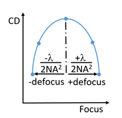

To access: In the Session Browser, activate a session and select pxSMO in the Setup Items tree. In the Basic tab of the pxSMO Setup pane, click Set next to Anchor/Thres/Dose.
The anchoring setup dialog box enables adjusting the threshold used by a litho model to print a specified anchor gauge on target using a specified mask bias.
You can apply anchoring to three stages:
Pre-SMO
pxSMO (Dynamic) — this is the default tab
Post-SMO
Each stage has a separate settings tab. The Pre-SMO and Post-SMO tabs display the same setting choices.
Object |
Description |
|---|---|
Fit to clip Fit to SMO clip Fit to gauge |
Resizes the viewer to show the clip zoomed-out or zoomed-in. Click the icon to activate the state. |
Target |
Toggles viewer between hiding and displaying the target layer. |
Mask |
Toggles viewer between hiding and displaying the mask layer. |
Gauge |
Toggles viewer between hiding and displaying the gauge. |
Dynamic Tab |
|
Anchoring Selection Settings Settings to control the anchor selection method. |
|
Anchoring Disabled. Use Fixed Threshold from Lithomodel |
Deactivates anchoring and uses the displayed threshold from the litho model. This is the default. |
Optimize Dose |
Optimizes the dose value instead of anchoring to a gauge. |
Anchoring on Selected Gauge |
Activates anchoring to a specified gauge. |
Anchor Gauge selector |
Specifies the gauge to use to print on target. The default is the first gauge. |
Drawn CD |
Reports the drawn CD for the selected gauge. This value is read-only. |
Anchor Clip Condition Settings Bias Settings Settings activate anchoring and set the mask feature size. |
|
Absolute Mask Feature Size |
Specifies the feature mask size in nanometers. |
Relative Mask Feature Size |
Specifies the feature mask bias in nanometers relative to the target size. |
Bias Config Settings Settings control application of bias to target features. |
|
Bias Type |
Specifies the type of CD measurements that the bias is applied to:
|
Bias Value |
Specifies the bias applied to the target. By default, the bias value is 0 percent. When bias type fix is used, the units change to nanometers. |
Minimum Width (um) Maximum Width (um) Minimum Space (um) Maximum Space (um) |
Applies the bias value to lines and spaces within the minimum and maximum values.
When Minimum Space and Maximum Space are set to zero, they use the Minimum Width and Maximum Width values. All values are in microns. |
Copy Target Clip |
Copies the anchor clip from the target layer to the correction layer. This option appears only if a correction layer is mapped. |
OPC |
Uses the anchor clip in OPC and Verify jobs. Default is enabled. |
Pre-SMO and Post-SMO Tabs |
|
Anchoring Selection Settings Settings to control the anchor selection method. |
|
Anchoring Disabled. Use Fixed Threshold from Lithomodel |
Deactivates anchoring and uses the displayed threshold from the litho model. This is the default. |
Specify Fixed Threshold |
Sets a different threshold than the lithomodel value. |
Absolute Mask Feature Size |
Specifies the feature mask size in nanometers. |
Relative Mask Feature Size |
Specifies the feature mask bias in nanometers relative to the target size. |
Anchor Gauge selector |
Specifies the gauge to use to print on target. The default is the first gauge. |
Drawn CD |
Reports the drawn CD for the selected gauge. This value is read-only. |
Focus Centering Settings Settings activate focus centering and specify the centering method. |
|
No Focus Centering |
Deactivates focus centering. This is the default. |
MANUAL (relative) |
Specifies a focus offset in nanometers relative to the nominal condition. When activated, the default offset is 0 nm. |
Perform Focus Centering |
Specifies an automated search for focus center using the Focus Centering Options. |
Focus Centering Options Settings Activated when Perform Focus Centering is selected. Settings specify gauge filtering and selection. |
|
Do Not Pre-Filter Gauges (Use All) Use Manually Selected Gauges Pre-Filter Gauges for Focus Sensitivity |
Specifies which gauges are used to determine focus center.
|
Defocus Start Adjustment |
Simultaneously optimizes both the beam focus and defocus start values using the target CD. Requires at least 2 gauges to be selected for focus centering. The defocus start range values are in microns. |
Maximum Defocus Value |
Specifies the maximum defocus to use in the focus sensitivity calculation. Default value is 0.5 * lambda / NA^2. Hovering the cursor over the default formula displays the value.  |
Number of Defocus Values to Consider During Parabola Fitting |
Specifies the number of focus values used in the focus sensitivity calculation. Default is 5. |